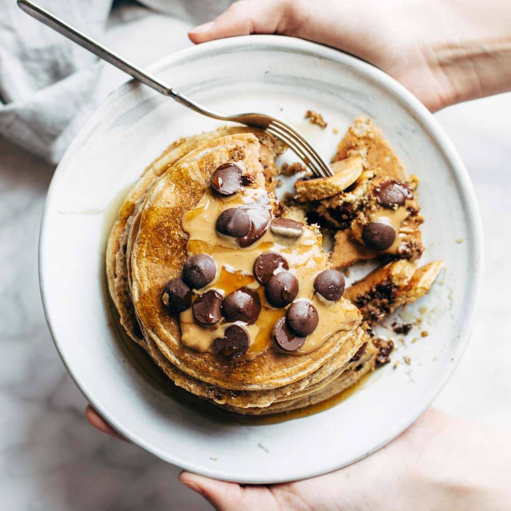

Protein Pancakes

Description
A simple but effective recipe for protein rich pancakes that are healthy and easy!
Ingredients
- 1 cup oats
- 1 banana
- 2 eggs
- 1/2 cup egg whites
- 1 teaspoon baking powder
- a pinch of salt
- a pinch of cinnamon
- 1-2 scoops of protein powder (about 1/4 cup, or 29 grams)
- 2 tablespoons flax meal
Steps
- Run everything through the blender on medium low speed until very well mixed.
- Heat a nonstick griddle to medium high heat. Add batter in small circles - about
1/4 cup per pancake. Sprinkle with blueberries or chocolate chips if you want.
When the edges start to look dry (2-3 minutes), flip and cook another minute or
two on the other side.
- Top with anything you like!